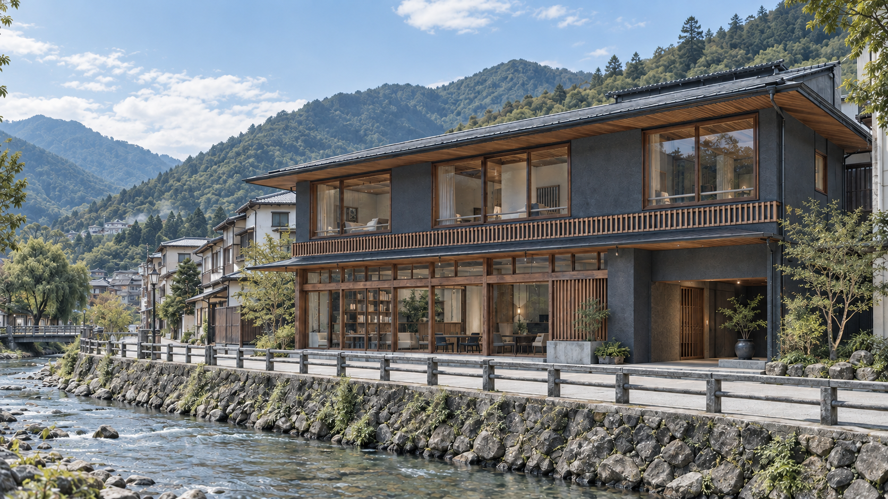
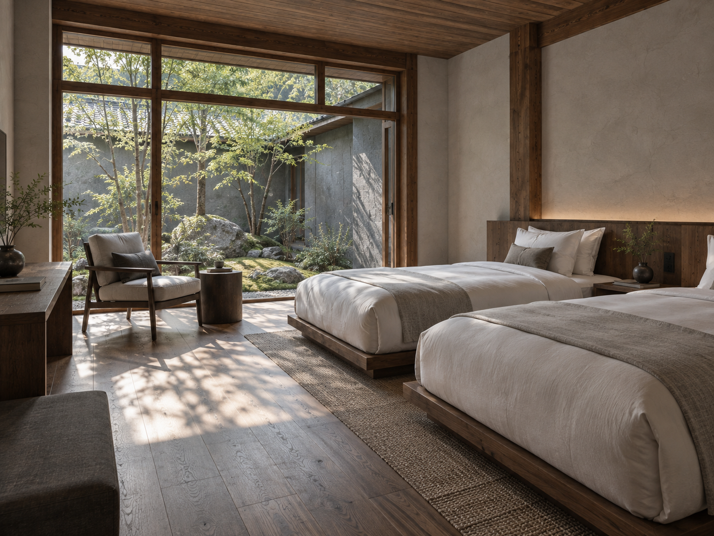
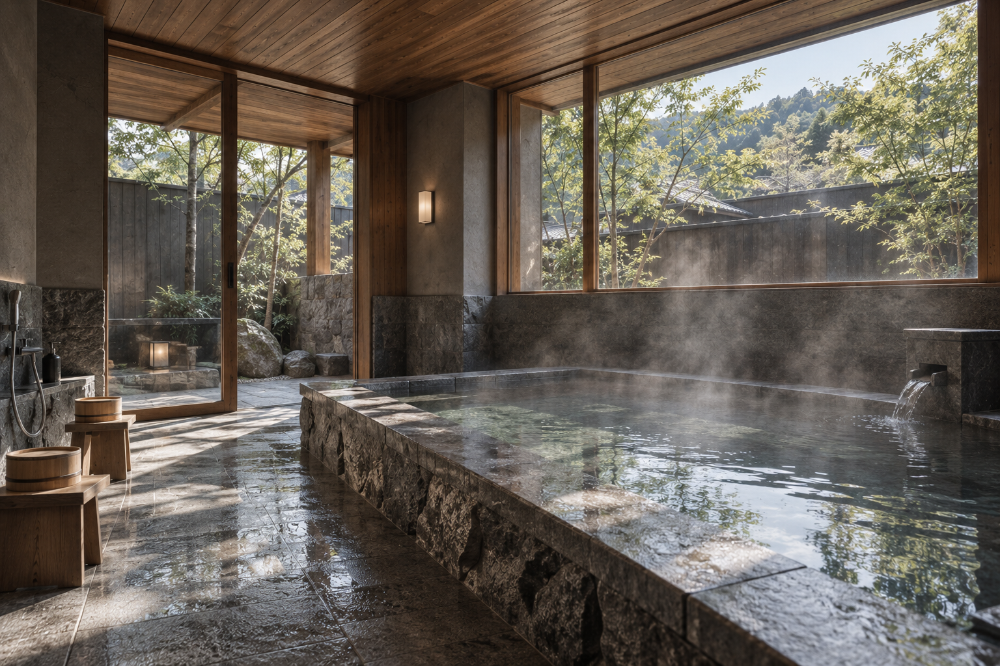
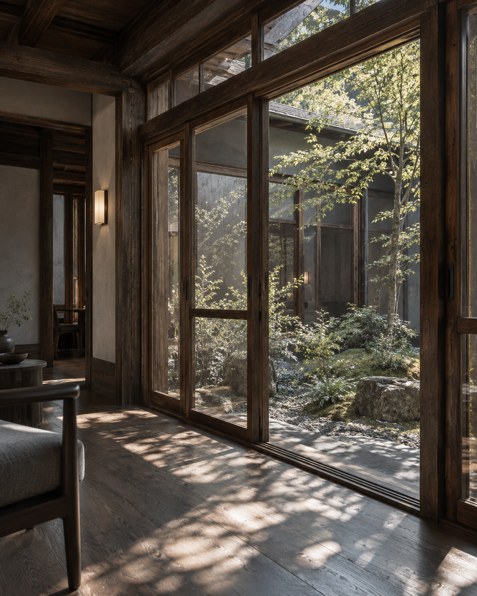
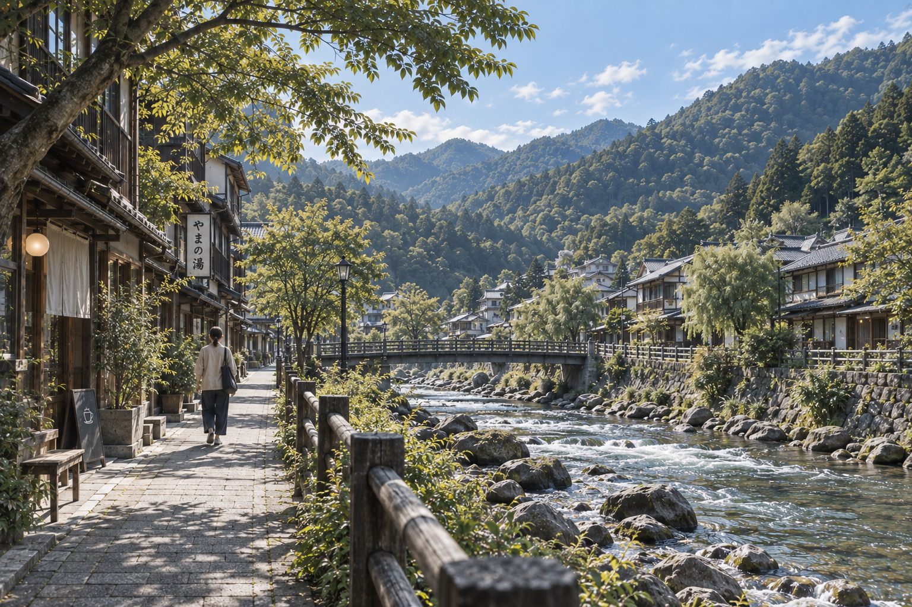
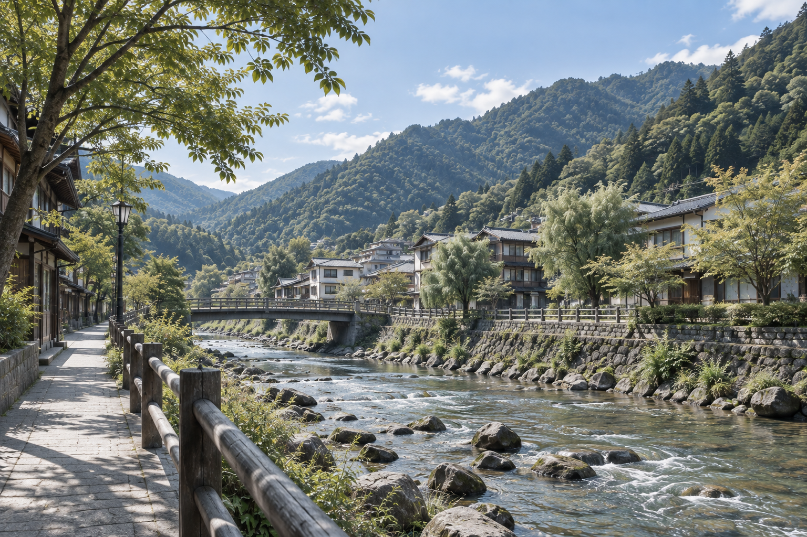

何もしない一泊を、
TSUGIで。
00 — INTRODUCTIONINTRODUCTION
残すものを選ぶ。
古いものをすべて残すのでも、
すべて新しくするのでもない。
残すもの、変えるもの、
なくすものを選び、
現在の滞在へ継ぎ直す。
古いものをすべて残すのでも、すべて新しくするのでもない。
残すもの、変えるもの、なくすものを選び、
現在の滞在へ継ぎ直す。
-
01
EDIT
残すものを選ぶ。
-
02
SPACE
部屋を減らし、
余白を増やす。 -
03
TIME
宿泊者の時間を
急がせない。
01 — STAY
8つの客室




EDIT → SPACE → TIME
12室から、8室へ。
1968年に建てられた旅館を改修し、12室あった客室を8室に減らしました。一室あたりの空間を広げ、ラウンジなど、客室の外でもゆっくり過ごせる場所を設けました。
— — SPACESPACE / LOUNGE
ラウンジ


部屋を減らして生まれた場所を、何もしないための共有空間へ。
VIEW THE STAY →02 — STORY
旅館を継ぐ


03 — EXPERIENCE
急がない一日。
歩く、浸かる、読む。
予定を増やさないための過ごし方。
| 時刻 | 過ごし方 |
|---|---|
| チェックイン | |
| 温泉 | |
| 夕食 | |
| 翌朝の散歩 |


LOCATION
山と川のあいだ
TSUGIは、山に囲まれた温泉地の川沿いにあります。温泉街までは徒歩約8分。川沿いを歩きながら、共同浴場や小さなベーカリーにも立ち寄れます。